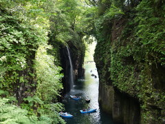
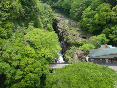
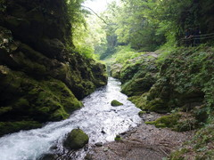
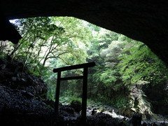

例年ならばゴールデンウィークに国内旅行は混むので避けるけれど、
先日の大地震の影響で九州旅行のキャンセルが相次いでいると聞いて行くことにした。
宮崎空港で飛行機から電車の乗り換え10分というギリギリの計画だったけれど、
運良く間に合って昼過ぎにはもう高千穂に着いた。
高千穂渓は残念ながら地震の影響で渓流沿いの道はほとんど立ち入り禁止だったけれど、
さすが渓谷が美しい。橋の上から眺めると目がくらみそうな高さ。
| 高千穂 | 上の橋から。通行禁止の小道が見える |
|  |
 |
高千穂峡から1時間ほどかけて、神話に出てくる天岩戸へ。
神社の前にある学校の名が岩戸小学校とかすごい響き。
神社の参拝だけで直接岩戸は見なかったが、その奥にある天岩戸を開かせるための作戦会議をした天安河原という場所も美しいところだった。
| 岩戸の奥の渓流をたどる | ここで宴会の調整をしていたらしい |
|  |
 |
今日は町で借りた自転車で移動しているが、初めての電動アシスト付きだった。
赤信号で停止中に何気なくペダルに足を置いただけで前に押し出してくれる油断のならない機能だったが、
きつい山道が多いので助かった。これはすごい。
調子に乗って夕方バッテリーが上がるまで渓流沿いを走りまくった。
夜は地産の焼肉。美味。
|